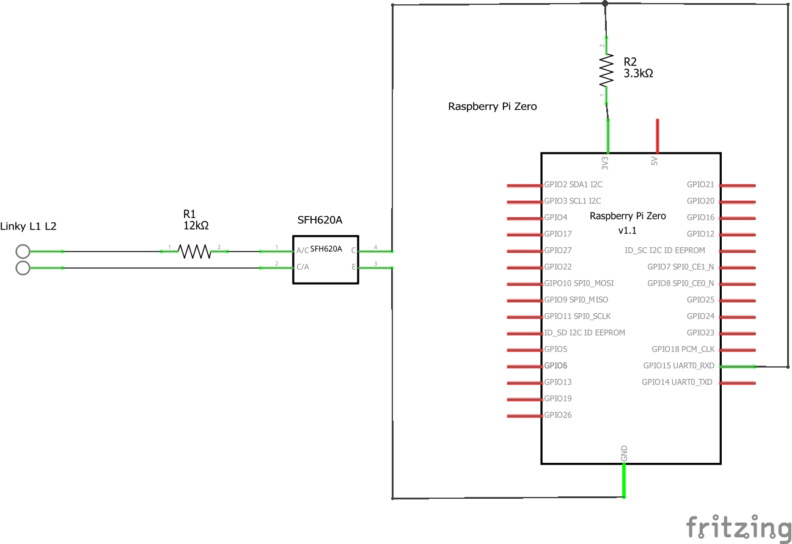
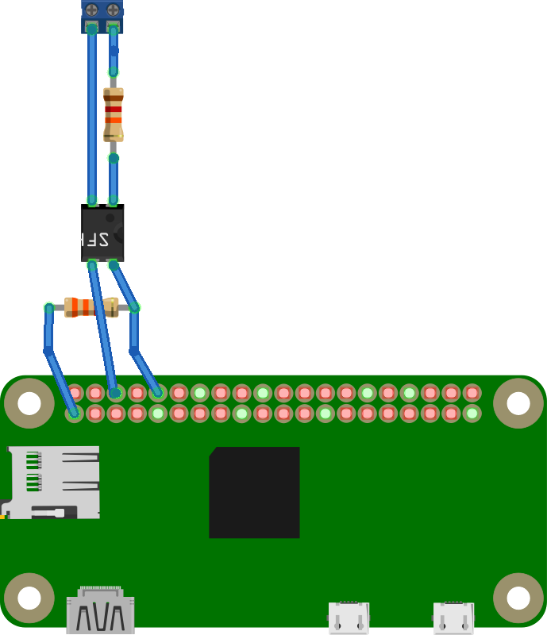

Extracting data from a linky through the tele-info port using a RaspberryPi
Hardware
Here, we will be using a RaspberryPi Zero W with Raspbian Stretch Lite version 2018-11-13 : www.raspberrypi.org

Schematics for the conversion circuit that converts tele-info to serial
 Test with a raspberryPi
Connect to the RaspberryPi via SSH using the USB/Ethernet Gadget mode
Configure the serial port speed to match the Linky's
sudo stty -F /dev/ttyS0 sane -parenb 1200 cs7
This command displays data from the serial port every second (the liky sends info every 5 seconds)
watch -t -n 1 cat /dev/ttyS0
Results

Understanding the data
Enedis (the company behind linky) has a document listing the télé-info specifications on their website :Enedis-NOI-CPT_54E.pdf ou Enedis-NOI-CPT_54E.pdf
The data packages are made of a name and a value, like so : BASE 003733275
The main fields are the following :
| Field | Meaning |
|---|---|
MOTDETAT |
lit. State Word (selfcheck) |
ADCO |
The linky's ID |
OPTARIF |
tariff options (subscription regimen) |
ISOUSC |
Subscribed amperage |
BASE |
Consumption (Wh) |
PTEC |
Peak hour, off peak |
IINST |
instantaneous Amperage (en ampères) |
IMAX |
max Amperage (en ampères) |
PAPP |
AC Power (en Volt.ampères) |
HHPHC |
Schedule Group |